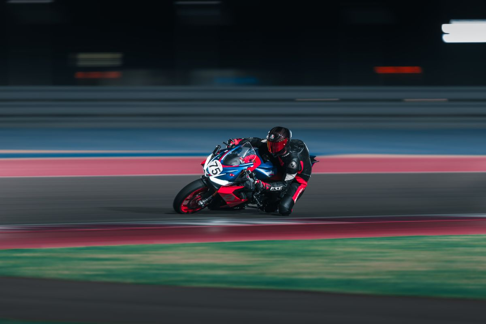
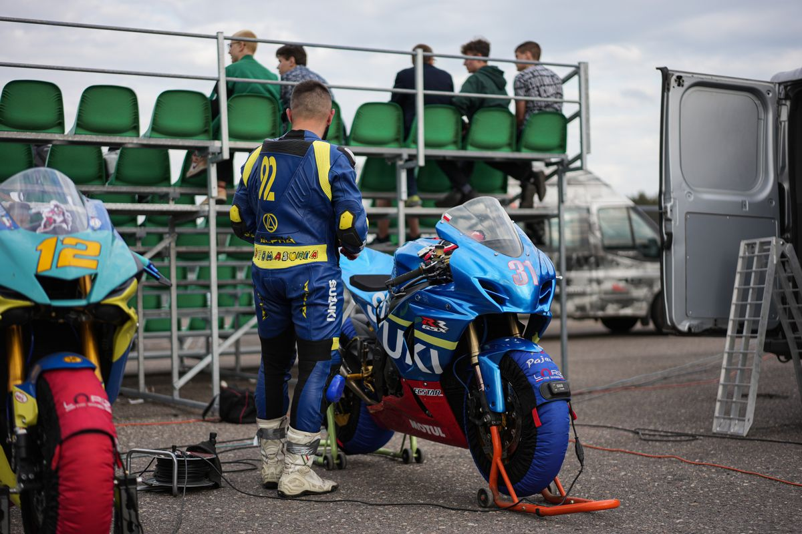
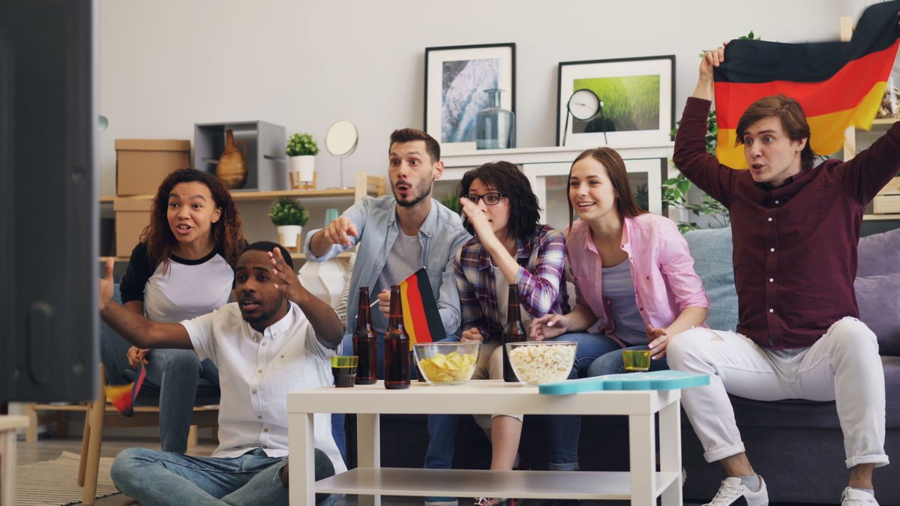

Jadwal MotoGP Qatar 2026 sudah jalan mulai hari ini, Jumat 6 November 2026, di Sirkuit Lusail. Sprint digelar Sabtu 7 November pukul 23.00 WIB, dan balapan utama MotoGP digelar Minggu 8 November pukul 23.00 WIB dengan 22 lap. Seri ini jadi putaran ke-20 musim 2026, dan ada satu kabar besar: Yamaha tidak ikut balapan akhir pekan ini.
Jadi, apa yang perlu kamu catat dari MotoGP Qatar 2026? Rangkaian balapan berlangsung tiga hari, 6 sampai 8 November 2026, di Sirkuit Internasional Lusail, Qatar. Jumat 6 November diisi latihan bebas dan Practice, dengan sesi MotoGP mulai pukul 18.45 WIB dan Practice pukul 23.00 WIB. Sabtu 7 November ada latihan kedua, kualifikasi, lalu Sprint Race pukul 23.00 WIB selama 11 lap. Minggu 8 November jadi hari balapan: Moto3 pukul 20.00 WIB, Moto2 pukul 21.15 WIB, dan balapan utama MotoGP pukul 23.00 WIB selama 22 lap. Semua jam di atas memakai WIB. Buat penonton di Indonesia tengah, tambahkan satu jam, jadi balapan utama jatuh Senin 9 November pukul 00.00 WITA. Ada satu hal yang bikin seri ini berbeda dari seri lain musim ini. Yamaha memutuskan tidak mengirim tim MotoGP-nya ke Qatar karena kebijakan pembatasan perjalanan perusahaan terkait situasi keamanan di Timur Tengah. Akibatnya empat pembalap Yamaha absen, yaitu Fabio Quartararo, Alex Rins, Jack Miller, dan Augusto Fernandez. MotoGP tetap menggelar seri ini sesuai jadwal.
Kenapa jadwal MotoGP Qatar 2026 pindah ke November?
Seri Qatar sebenarnya dijadwalkan berlangsung pada 10 sampai 12 April 2026. MotoGP mengumumkan pemindahan seri ini ke 6 sampai 8 November karena situasi keamanan di kawasan Timur Tengah. Pemindahan itu menggeser dua seri penutup musim: Grand Prix Portugal dijadwalkan 20 sampai 22 November, dan seri terakhir di Valencia pada 27 sampai 29 November 2026. Ketegangan kawasan itu juga terasa sampai pekan balapan. Konferensi pers pembuka yang dijadwalkan Kamis 5 November pukul 16.00 waktu Qatar diundur empat jam menjadi pukul 20.00. MotoGP menegaskan seri tetap digelar sesudah berkonsultasi dengan pemerintah Qatar, pengelola Sirkuit Lusail, dan penasihat keamanan independen. Penyelenggara menyebut belum menerima informasi yang mengharuskan perubahan rencana.

Jam berapa saja sesi MotoGP Qatar 2026 dalam WIB?
Semua balapan utama di Lusail digelar malam hari, jadi jam tayang di Indonesia juga malam. Ini jadwal lengkapnya dalam WIB, per 6 November 2026. Jumat 6 November: latihan bebas Moto3 pukul 17.00 WIB, Moto2 pukul 17.50 WIB, dan FP1 MotoGP pukul 18.45 WIB. Sesi Practice MotoGP digelar pukul 23.00 WIB. Sabtu 7 November: FP2 MotoGP pukul 18.00 WIB, kualifikasi pukul 18.40 WIB, dan Sprint Race pukul 23.00 WIB selama 11 lap. Minggu 8 November: balapan Moto3 pukul 20.00 WIB, balapan Moto2 pukul 21.15 WIB, dan balapan utama MotoGP pukul 23.00 WIB selama 22 lap. Jadwal masih bisa berubah mengikuti keputusan penyelenggara, jadi cek lagi jadwal resmi MotoGP menjelang tiap sesi. Buat penonton di WITA, semua jam di atas tambah satu jam. Balapan utama MotoGP berarti Senin 9 November pukul 00.00 WITA.
Kenapa Yamaha tidak ikut balapan di Qatar?
Yamaha mengumumkan sesudah Grand Prix Malaysia bahwa tim MotoGP-nya tidak berangkat ke Qatar. Alasannya kebijakan pembatasan perjalanan yang berlaku di seluruh perusahaan terkait situasi keamanan di Timur Tengah. Yamaha menilai evaluasi terbaru belum memberi alasan yang cukup kuat untuk mengubah kebijakan itu. Yamaha juga menyatakan tetap berkomitmen penuh terhadap MotoGP dan menantikan kembali berkompetisi di Grand Prix Portugal. MotoGP Group menyatakan kekecewaan atas keputusan itu. Penyelenggara menyebut sudah berkonsultasi dengan pemerintah Qatar, Sirkuit Lusail, dan penasihat keamanan independen, dan belum menerima informasi yang mengharuskan perubahan rencana. Selain empat pembalap Yamaha, Alex Marquez juga absen karena memilih menjalani operasi bahu.

Di mana nonton MotoGP Qatar 2026 dari Indonesia?
Buat nonton gratis, cek siaran MotoGP di Trans7. Seluruh seri utama MotoGP dijadwalkan tayang di Trans7 sepanjang musim 2026. Perlu dicatat, siaran gratis tidak selalu mencakup semua sesi. Latihan bebas, kualifikasi, dan Sprint bisa punya jadwal dan ketentuan berbeda dari balapan utama. Buat sesi lengkap, ada SPOTV yang bisa ditonton lewat Vidio dan Vision+ sesuai paket langganan. Pastikan paket yang kamu pilih memang mencakup kanal SPOTV. Ada juga SPOTV NOW sebagai opsi lain. Lewat jalur resmi MotoGP sendiri, ada layanan VideoPass yang menyiarkan semua sesi secara langsung. Harga yang tercantum di Crash per 2 November 2026: paket bulanan 29,99 euro, paket semusim 148,99 euro termasuk Timing Pass, atau 139,99 euro tanpa data langsung. Harga dan paket bisa berubah, jadi periksa dulu sebelum berlangganan.
Apa yang ditunggu dari Veda Ega Pratama dan Mario Suryo Aji?
Minggu malam jadi puncak buat penonton Indonesia. Balapan Moto3 yang diikuti Veda Ega Pratama dimulai pukul 20.00 WIB, disusul balapan Moto2 bersama Mario Suryo Aji pukul 21.15 WIB. Veda datang ke Qatar dengan modal besar: ia finis kedua di Moto3 Malaysia pada Minggu 1 November 2026, pencapaian bersejarah buat Indonesia. Dua balapan pembuka itu jadi pemanasan yang pas sebelum balapan utama MotoGP pukul 23.00 WIB. Kalau kamu cuma bisa nonton satu malam akhir pekan ini, Minggu malam jawabannya.

Intinya, catat tiga jam ini: Practice Jumat pukul 23.00 WIB, Sprint Sabtu pukul 23.00 WIB, dan balapan utama Minggu pukul 23.00 WIB. Semuanya malam, semuanya di Lusail, dan semuanya bisa kamu ikuti dari Indonesia. Pasang pengingat sekarang supaya tidak ketinggalan start.
Baca juga: kalau kamu ketinggalan cerita Veda di Malaysia, baca liputan kami tentang Veda Ega Pratama finis kedua di Moto3 Malaysia 2026, lalu jelajahi artikel Other lainnya di halaman Other, dan intip juga artikel riset di blog kami.
Sumber dan Info Resmi
Angka dan detail di artikel ini merujuk ke sumber berikut:
- Crash: MotoGP Qatar 2026 berlangsung 6-8 November 2026 di Lusail, putaran ke-20; harga VideoPass per 2 November 2026.
- Bulatan Times: konferensi pers Kamis 5 November diundur 4 jam menjadi pukul 20.00 waktu Qatar; jadwal sesi dalam WIB.
- Topik: seri Qatar semula dijadwalkan 10-12 April 2026 lalu dipindah ke November; Portugal 20-22 November dan Valencia 27-29 November 2026.
- Crash Indonesia: Yamaha absen karena pembatasan perjalanan perusahaan; Quartararo, Rins, Miller, dan Fernandez absen; Yamaha berencana kembali di Portugal.
- Rival: Moto3 Veda Ega Pratama Minggu 20.00 WIB, Moto2 Mario Suryo Aji 21.15 WIB; siaran lewat Trans7, SPOTV, dan Vidio.
- Aktualita: Sprint Sabtu 23.00 WIB dan balapan utama Minggu 23.00 WIB; balapan utama Senin 9 November 00.00 WITA; Trans7 dan SPOTV mitra siaran resmi wilayah Indonesia.
- Astra Otoshop: Trans7 siaran gratis untuk seri utama; SPOTV lewat Vidio dan Vision+ sesuai paket; SPOTV NOW sebagai opsi lain.
- Liga Olahraga: Alex Marquez absen karena memilih menjalani operasi bahu.
- BSI News: latihan bebas Jumat Moto3 17.00 WIB dan Moto2 17.50 WIB; balapan utama Minggu 8 November 23.00 WIB, 22 lap, Sprint 11 lap.